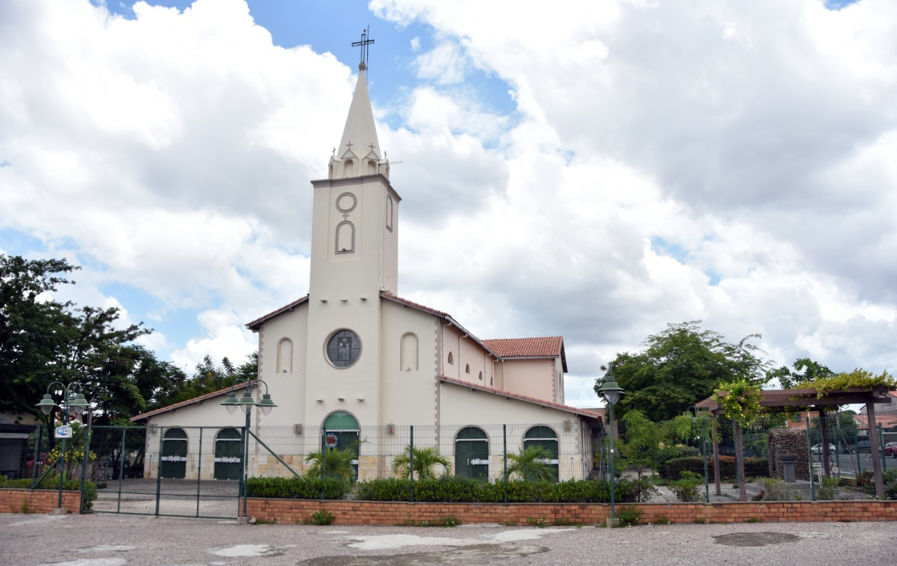

Aqui você encontra todos os horários de missas, adorações e confissões de nossa paróquia. Sinta-se à vontade para enviar suas intenções de oração e participe ativamente de nossa comunidade!
"A paróquia é um lugar de acolhimento e amor. Sou muito grato por fazer parte desta comunidade." - Maria
Domingo: 9h e 18h
Quarta-feira: 19h
Sábado: 17h
Terça-feira: 18h
Quinta-feira: 20h
Antes das missas.
Ó Senhor, ajuda-nos a viver em amor e harmonia. Que possamos sempre buscar a Tua luz em nossos caminhos. Amém.